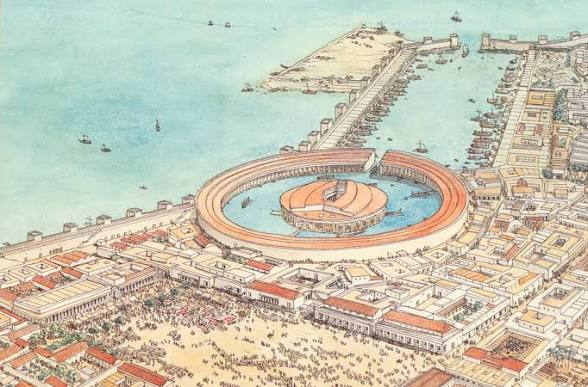
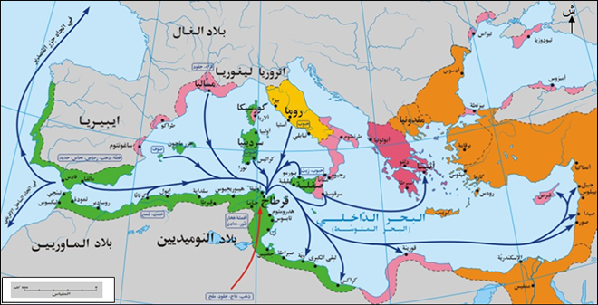
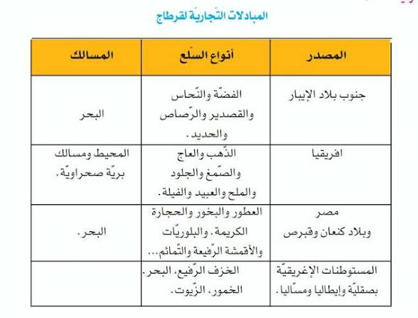
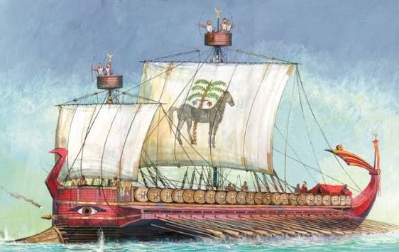
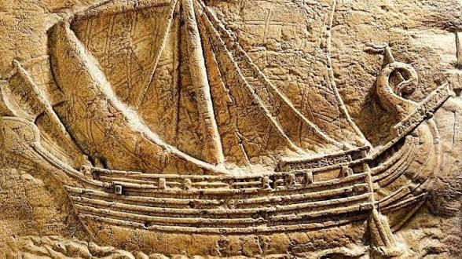
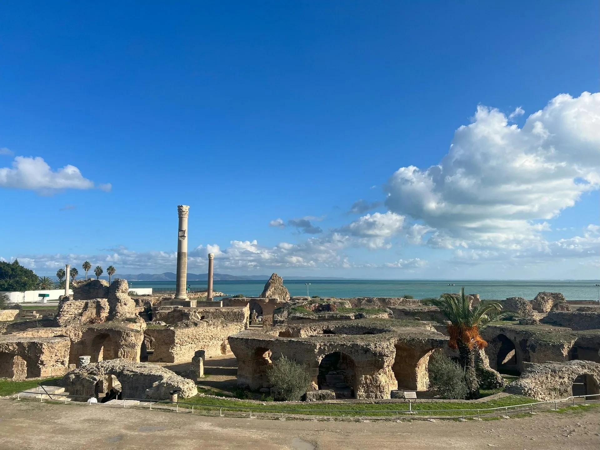

قرطاج: الميناء والتوسع التجاري
مقدمة
مثّل الميناء القرطاجي ركيزة أساسية في بناء القوة التجارية والعسكرية لقرطاج، إذ جمع بين وظيفة تجارية وأخرى عسكرية، ووفّر البنية التحتية اللازمة لتوسعها البحري في البحر المتوسط وخارجه. وقد وصف المؤرخ الإغريقي أبيانوس ميناء قرطاج بأنه من أعظم المنشآت البحرية في العالم القديم، لما تميز به من هندسة مركبة واستغلال محكم للموروث الفينيقي.
ما هي خصائص الميناء القرطاجي ودوره في بناء القوة التجارية والعسكرية لقرطاج؟ وما هي مظاهر التوسع المجالي والعوامل المفسرة له؟
I الميناء ودوره في بناء القوة التجارية والعسكرية
1. خصائص الميناء ومكوناته
وصف لنا المؤرخ الإغريقي «أبيانوس» (200 ق.م–120 م) في كتابه «لوبيكا» (بونيكا) موانئ قرطاج كما كانت منذ القرن الثالث ق.م. وتميز الميناء القرطاجي ببنية مركبة ومحيط شامل، إذ شمل ميناءً تجارياً وآخر عسكرياً إلى جانب ورشات إصلاح السفن والمخازن، وامتد على مساحة تتجاوز 20 هكتاراً.
أ. الميناء التجاري
يشكل الميناء التجاري الجزء الخارجي، وهو على هيئة حوض مستطيل الأضلاع، يبلغ طوله 465 متراً وعرضه 325 متراً، ويتيح مجالاً مائياً يقدر بـ 15 هكتاراً. تنفذ إليه السفن عبر بوابة عرضها 70 متراً (ما يقارب 20,72 متراً) تُغلق بسلاسل حديدية.
ب. الميناء العسكري
يستحوذ الميناء العسكري على الجزء الداخلي، ويتخذ شكل حوض دائري يبلغ قطره 325 متراً، محاط بجدران مزدوجة عالية وببوابة خشبية. ويتوسطه مركز القيادة العامة، ويتيح مجالاً مائياً يقدر بـ 8 هكتارات، ويضم أرصفة ضخمة وماوي لـ 250 سفينة حربية.
وتميز الميناء بموقع استراتيجي وبموضع محصّن، وعكس قدرة الإنسان القرطاجي على الإبداع وإحكام استغلال الموروث الفينيقي.
2. دور الميناء في بناء القوة التجارية والعسكرية
ساهم الميناء في بناء القوة التجارية والعسكرية لقرطاج ودعم حضورها في المتوسط. فقد احتلت التجارة المكانة الأولى في الاقتصاد القرطاجي. وقد اكتسبت قرطاج شهرة لدى شعوب البحر المتوسط، بل أصبحت مركزاً لتبادل منتجات أخرى من المحيط الأطلسي وما وراء الصحراء، وكان ذلك نتيجة مهارة القرطاجيين وإقبالهم على المخاطر وتعلّم لغات حرفائهم والتعرّف على أذواقهم.
II التوسع المجالي لقرطاج: المظاهر والعوامل
1. التوسع القرطاجي في المتوسط والمسالك التجارية
تمكنت قرطاج من التوسع مبكراً قبل إنجاز الميناء على الشكل المعروف به في القرن الثالث ق.م. انطلقت السفن القرطاجية من ميناء قرطاج وسيطرت على المسالك التجارية البحرية الهامة في المتوسط، وعزّزت حضورها في جزره (مالطة، سردينيا، بنتلاريا، جزر البليار، غرب جزيرة صقلية) وفي جنوب بلاد الإيبر (إسبانيا والبرتغال) وعلى السواحل المغربية.
تميّز الملاحون القرطاجيون المنتسبون إلى عائلة المغاوين بالجرأة وبخوض الرحلات الاستكشافية خارج المتوسط، مما فتح مسالك تجارية جديدة لقرطاج. فقد قام الملك القرطاجي «حيملكو» (أو حيملكون) برحلة استكشافية سنة 450 ق.م انطلاقاً من ميناء جديد ببلاد الإيبر، مجازياً السواحل الأوروبية الغربية شمالاً، ويبدو أنه بلغ السواحل البريطانية. وتمكن البحّار القرطاجي «حنّون» من القيام برحلة بداية من سنة 425 ق.م انطلاقاً من قرطاج في اتجاه المحيط الأطلسي، مجازياً السواحل الغربية الإفريقية جنوباً إلى غاية خليج الكاميرون.
أ. المسالك التجارية البحرية الأساسية
واشتملت أربعة مسالك أساسية في التجارة البحرية وهي:
- المسلك الذي يربط الموانئ البونية بمملكة «تارشيش» (جنوب إسبانيا)، حيث تتزود السفن القرطاجية بمعادن مختلفة كالفضة والرصاص والنحاس والحديد.
- المسلك الذي يربط ميناء «جدر» (قادس جنوب إسبانيا) بجنوب شرقي بريطانيا، حيث توجد مناجم القصدير.
- المسلك الذي يربط ميناء «جدر» بالسواحل الإفريقية المطلة على المحيط الأطلسي، حيث يتوفر الذهب والعاج واللحم والأنعام والعبيد والفيلة.
- المسلك الذي يربط الموانئ البونية بموانئ المتوسط في مصر وبلاد كنعان (فلسطين) وبينيقيا، حيث العطور والأحجار الكريمة والأقمشة، وفي اتجاه المستوطنات الإغريقية بصفة إيطاليا ومساليا (مرسيليا جنوب فرنسا)، حيث الخزف والفخار والخمور والزيوت.
ب. المبادلات التجارية لقرطاج
| المصدر | أنواع السلع | المسالك |
|---|---|---|
| جنوب بلاد الإيبر | الفضة والنحاس والقصدير والرصاص والحديد | البحر |
| إفريقيا | الذهب والعاج والصمغ والجلود والملح والعبيد والفيلة | المحيط ومسالك بريّة صحراويّة |
| مصر وبلاد كنعان وقبرص | العطور والبخور والحجارة الكريمة والباروديات والأقمشة الرفيعة والتماثيل | البحر |
| المستوطنات الإغريقية بصفة إيطاليا ومساليا | الخزف والفخار والخمور والزيوت | البحر |
2. عوامل القوة التجارية القرطاجية
أولت قرطاج التجارة عناية فائقة، فوّرت الظروف المساعدة على انتشارها ونموّها، وتجلّت تلك العناية في:
أ. بناء السفن وتجهيز الموانئ
حيث وفّرت حظائر بناء السفن في قرطاج أنواعاً عديدة من السفن:
- سفن حربية ثلاثية (كل صفّ يعدّ 30 جانباً)، بلغ عددها وفق بعض المصادر 300 سفينة.
- سفن تجارية تميزت بحجم أكبر وبسرعة أقل، لكنها قادرة على حمل بضائع ومواد أولية هامة.
ب. حماية الأساطيل والأسواق
اتخاذ الإجراءات لحماية الأساطيل من القرصنة وحماية الأسواق من المنافسة، وذلك بإبرام المعاهدات، مثل المعاهدة مع روما سنة 509 ق.م.
ج. تعيين القناصل
تعيين القناصل لدى السلطات الأجنبية للسهر على حماية المواطنين القرطاجيين وضمان حقوقهم.
د. تطوير المعاملات التجارية
- استعمال المقايضة (مع شعوب السواحل الإفريقية على المحيط الأطلسي).
- استعمال الفضة والذهب في شكل سبائك موزونة.
- استخدام العملة بداية من القرن الخامس ق.م.
خاتمة
كرّست قرطاج نشاطها التجاري، وعزّزت التلاقح الحضاري، ودعمت جسر التواصل بين شرق المتوسط وغربه. ولكن العبقرية التجارية للبونيين لم تجلب لهم محبة بقية الشعوب، مما بشّر اندلاع المواجهة مع روما حول مناطق النفوذ في غرب المتوسط.
📖 تعريفات
👤 شخصيات
- أبيانوس: مؤرخ إغريقي (200 ق.م – 120 م)، صاحب كتاب «لوبيكا» (بونيكا)، وصف فيه موانئ قرطاج كما كانت منذ القرن الثالث ق.م وصفاً دقيقاً.
- حيملكو (حيملكون): ملك قرطاجي قام برحلة استكشافية سنة 450 ق.م انطلاقاً من ميناء جديد ببلاد الإيبر، مجازياً السواحل الأوروبية الغربية شمالاً، ويبدو أنه بلغ السواحل البريطانية.
- حنّون: بحّار قرطاجي قام برحلة استكشافية بداية من سنة 425 ق.م انطلاقاً من قرطاج في اتجاه المحيط الأطلسي، مجازياً السواحل الغربية الإفريقية جنوباً إلى غاية خليج الكاميرون.
🌍 دول ومناطق
- قرطاج: مركز القوة التجارية والعسكرية في غرب المتوسط، وامتد نفوذها على جزره وسواحله بفضل مينائها المركّب وأسطولها التجاري والحربي.
- تارشيش: مملكة قديمة تقع في جنوب إسبانيا، وكانت مصدراً للمعادن المختلفة كالفضة والرصاص والنحاس والحديد.
- جدر (قادس): ميناء يقع في جنوب إسبانيا، ربطته قرطاج بجنوب شرقي بريطانيا من أجل القصدير، وبالسواحل الإفريقية على المحيط الأطلسي.
- بريطانيا: منطقة في شمال أوروبا كانت مصدراً للقصدير، وربطها ميناء «جدر» القرطاجي بمسلك تجاري بحري.
- مصر: إحدى محطات المسلك التجاري الرابع، حيث العطور والأحجار الكريمة والأقمشة.
- بلاد كنعان (فلسطين): منطقة في شرق المتوسط، إحدى محطات المسلك التجاري الرابع لتزويد قرطاج بالعطور والأقمشة.
- بينيقيا: الوطن الأم للقرطاجيين في شرق المتوسط، مصدر الموروث الحضاري والديني والبحري لقرطاج.
- مساليا (مرسيليا): مستوطنة إغريقية في جنوب فرنسا، كانت مورداً للخزف والفخار والخمور والزيوت.
- إيطاليا: منطقة في جنوب أوروبا، كانت مورداً للخزف والفخار والخمور والزيوت للموانئ البونية.
- صقلية: جزيرة في البحر المتوسط، امتد إليها النفوذ القرطاجي خاصة في غربها.
- سردينيا: جزيرة في البحر المتوسط، امتد إليها النفوذ القرطاجي.
- مالطة: جزيرة في البحر المتوسط، امتد إليها النفوذ القرطاجي.
- جزر البليار: مجموعة جزر في غرب البحر المتوسط، امتد إليها النفوذ القرطاجي.
- بلاد الإيبر (إسبانيا والبرتغال): منطقة في غرب أوروبا، امتد إليها النفوذ القرطاجي، وكانت مصدراً للمعادن.
- السواحل المغربية: منطقة في شمال غرب إفريقيا، امتد إليها النفوذ القرطاجي.
- المحيط الأطلسي: محيط تجاوزته الرحلات الاستكشافية القرطاجية بفضل حنّون وحيملكو، مصدراً لمسالك تجارية جديدة.
- خليج الكاميرون: منطقة في غرب إفريقيا، بلغها البحّار القرطاجي حنّون في رحلته الاستكشافية سنة 425 ق.م.
⚔️ أحداث هامة
- المعاهدة مع روما (509 ق.م): معاهدة أبرمتها قرطاج مع روما بهدف حماية أساطيلها من القرصنة وأسواقها من المنافسة.
- رحلة حيملكو الاستكشافية (450 ق.م): رحلة استكشافية انطلقت من ميناء جديد ببلاد الإيبر، مجازية السواحل الأوروبية الغربية شمالاً حتى السواحل البريطانية.
- رحلة حنّون الاستكشافية (425 ق.م): رحلة استكشافية انطلقت من قرطاج في اتجاه المحيط الأطلسي، مجازية السواحل الغربية الإفريقية جنوباً حتى خليج الكاميرون.
📅 سنوات وفترات
- القرن الثالث ق.م: الفترة التي بلغ فيها الميناء القرطاجي شكله المعروف، ووصفه فيها أبيانوس.
- 509 ق.م: إبرام المعاهدة بين قرطاج وروما لحماية الأساطيل والأسواق.
- 450 ق.م: رحلة حيملكو الاستكشافية نحو سواحل أوروبا الغربية والبريطانية.
- 425 ق.م: رحلة حنّون الاستكشافية نحو خليج الكاميرون عبر المحيط الأطلسي.
- القرن الخامس ق.م: بداية استخدام العملة في المعاملات التجارية القرطاجية.
📌 أخرى
- الميناء التجاري: الجزء الخارجي من الميناء القرطاجي، على هيئة حوض مستطيل الأضلاع بطول 465م وعرض 325م، ويتيح مجالاً مائياً 15 هكتاراً، تنفذ إليه السفن عبر بوابة عرضها 70م تُغلق بسلاسل حديدية.
- الميناء العسكري: الجزء الداخلي من الميناء القرطاجي، على شكل حوض دائري قطره 325م، محاط بجدران مزدوجة عالية وبوابة خشبية، ويتوسطه مركز القيادة العامة، ويضم أرصفة ضخمة وماوي لـ 250 سفينة حربية.
- المسلك التجاري: طريق بحري أو بري تستعمله السفن والقوافل التجارية لتبادل السلع بين قرطاج وأقاليم المتوسط والمحيط الأطلسي.
- السفينة الحربية الثلاثية: سفينة حربية قرطاجية تتكون من ثلاثة صفوف من المجدفين، كل صفّ يعدّ 30 جانباً، وبلغ عددها وفق بعض المصادر 300 سفينة.
- السفينة التجارية: سفينة قرطاجية تميزت بحجم أكبر وبسرعة أقل من السفينة الحربية، لكنها قادرة على حمل بضائع ومواد أولية هامة.
- القنصل: ممثل قرطاجي معيّن لدى السلطات الأجنبية للسهر على حماية المواطنين القرطاجيين وضمان حقوقهم.
- المقايضة: نظام تبادل تجاري استعملته قرطاج مع شعوب السواحل الإفريقية على المحيط الأطلسي، يقوم على مبادلة السلع بالسلع دون استعمال النقود.
- العملة القرطاجية: وسيلة دفع استعملها القرطاجيون في معاملاتهم التجارية بداية من القرن الخامس ق.م، إلى جانب الفضة والذهب في شكل سبائك موزونة.
🗺️ خرائط ومعطيات مصورة





